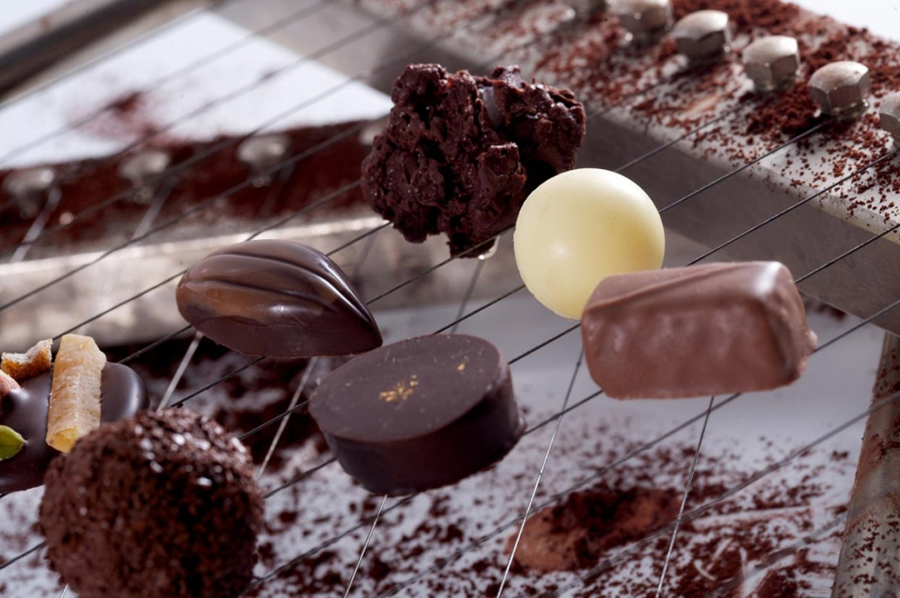

Conócenos
-
NOSOTRAS
-
Las tartas de la Mire es una empresa dedicada a la gastronomía. Realizamos gran variedad de tartas, pasteles y otros productos de repostería.
Somos artesanas pasteleras desde 1960. Inauguramos la pastelería en Enero de 1973 y desde entonces nuestra misión es endulzar a todas nuestras clientas.
La filosofía de trabajo de nuestra pastelería es la ilusión y la implicación en la elaboración de todos nuestros productos. Seleccionamos materias primas de primera calidad, acorde a cada elaboración y ajustándonos a la aplicación de técnicas de trabajo con personal cualificado y en contínua formación.

-
POLÍTICA DE CALIDAD
-
Tenemos implantado Sistemas de Autocontrol basados en el Análisis de Peligros y Puntos de Control Críticos (APPCC).
Así mismo, en nuestras instalaciones se realizan periódicamente los análisis: Microbiológico de aguas, Físico-Químico de aguas y Microbiológico de alimentos para garantizar la calidad Higiénico-Sanitaria.
-
NUESTROS SERVICIOS
-
Para particulares, empresas y ocasiones especiales.
Disponemos de servicio de productos "base" para restauración:
Planchas de hojaldre de mantequilla, Cremas inglesas, Cremosos de frutas, Compotas gelificadas, Salsas, Coulis, Crujientes de frutas y frutos secos, etc.